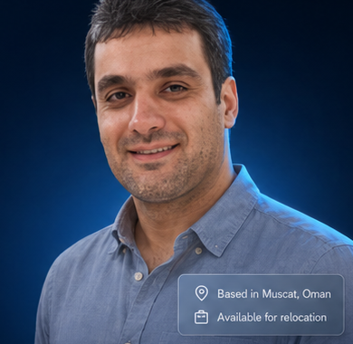
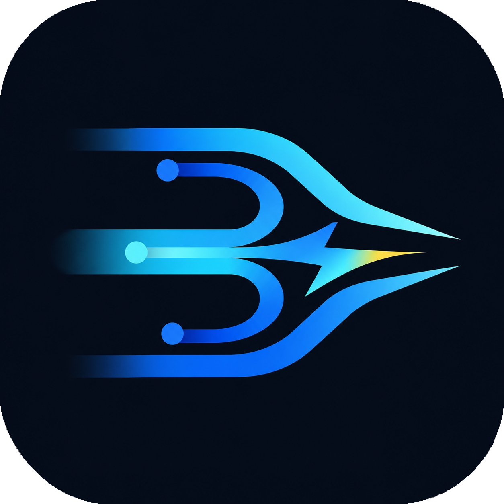
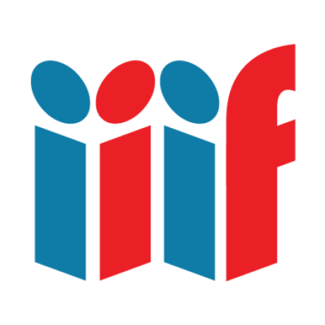

Years Experience
</> Senior .NET Backend Architect
Reliable backend systems are designed, scaled, and optimized.
Distributed systems, streaming platforms, and enterprise-grade .NET solutions are delivered with clean architecture, performance, and long-term maintainability.
.NET 8/9/10
Microservices
Event-Driven Architecture
CQRS
DDD
Open Source

Based in Muscat, OmanAvailable for relocation
Open-Source Commits
Kafka Msg/s
Parser Runtime
Major Systems Delivered
Engineering focus
Backend platforms are designed around scalability, clear boundaries, and operational reliability.
Backend Architecture
Clean, modular systems are structured with DDD, CQRS, and maintainable service boundaries.
Distributed Systems
High-throughput services are built for messaging, streaming, caching, and horizontal scale.
Performance Engineering
Critical paths are profiled, optimized, and simplified where latency and throughput matter.
Open Source
Reusable .NET libraries are maintained for streaming, serialization, licensing, and security tooling.
Tech Stack
.NET 8/9/10
C#
ASP.NET Core
gRPC
SQL Server
Kafka
RabbitMQ
Redis
AWS
Azure
Selected personal projects
Open-source work focused on backend infrastructure, protocol design, and developer tooling.

FeaturedThunderPropagator
Multi-repo .NET 8/9/10 streaming ecosystem: wire-format spec, 12 production-ready WebSocket channels, building blocks (100+ types), and multi-language client libraries for JS, Python, Go, Rust, Swift, and more.
Featured
LicenseManager
Native license validation through C/C++ core libraries with C# P/Invoke bindings. Cross-platform support for Windows, macOS, Linux, and ARM64 with hardware-bound key generation.

FeaturedIIIF.Manifest.Serializer.Net
Full-spec .NET library for IIIF Presentation API 2.0 manifest serialization. Features fluent API, dirty-field change tracking, deep-zoom image service integration, and multi-language metadata support.
Experience highlights
Enterprise systems, performance-critical services, and platform libraries have been delivered across multiple domains.
Asl Al-Uroba
ABP-based higher education platforms are being developed for admissions, SDK infrastructure, and college admission workflows.
Creative Advanced Technology
Fiber-optic microservices, EarthLink Iraq Creatio systems, and .NET MAUI exam platforms were delivered using RabbitMQ-based integration.
Alo Application
A custom MMTP market-feed parser was optimized to around 44ns runtime and enabled 500K+ Kafka messages per second.
Earlier Experience
E-government, RFID, DICOM, ophthalmology, real-estate MIS, and high-volume batch systems were delivered.
Technical writing
Practical .NET articles are written around backend architecture, security, integration patterns, and production engineering.
View all on Medium →
Thread vs Task.Run in .NET — with Kafka Consumer Examples
→
Blockchain-Based Logging
→
Generating Custom CAPTCHA Images in .NET
→
The Evolution of Secure Passwords: A Developer's Journey
→
Using Distributed Lock Mechanism with ZooKeeper in Dependency Injection
→
Preventing "Protected Memory" Exception on Fire-and-Forget Tasks
→
Senior backend work, relocation opportunities, and technical collaborations are welcome.
Responses are usually handled around Oman working hours, UTC+4.